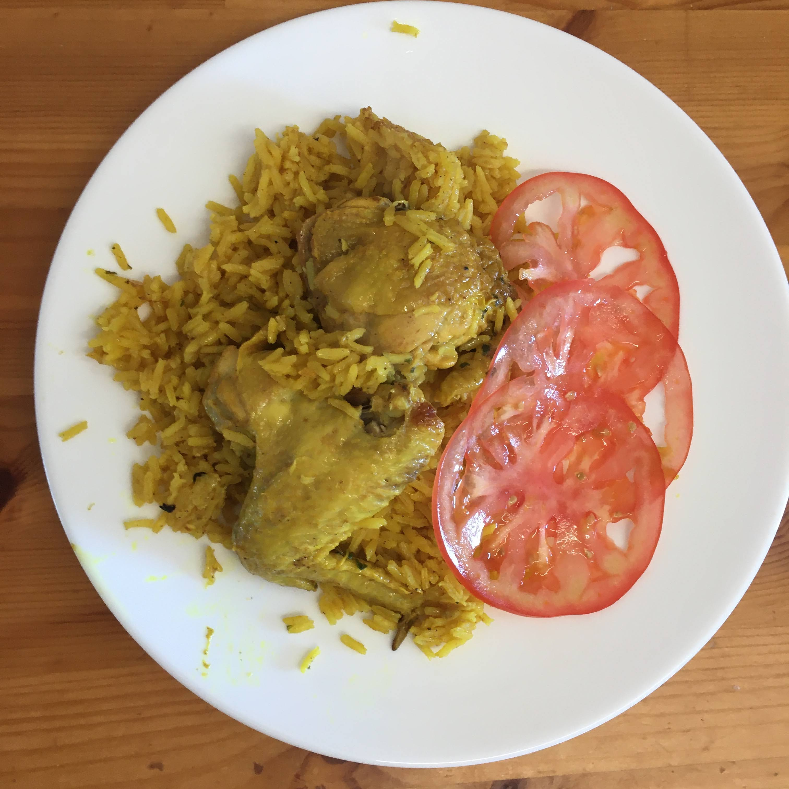

Galinhada

Ingredientes
- 1,2 kg de frango aos pedaços com osso e pele (1 frango)
- 100 ml de caldo de limão (1/2 copo americano)
- 100 g de cebola picadinha (1/2 cebola)
- 8 g alho picadinho (4 dentes)
- 20 g de açafrão da terra / cúrcuma em pó (2 colheres de sobremesa)
- 500 g de arroz cru (2 1/2 xícaras de chá)
- 1,2 l de água (5 xícaras de chá)
- Sal a gosto
- Pimenta de cheiro picadinha (ou outra) a gosto
- Salsinha picadinha a gosto
Modo de preparo
- Refogar o frango (em sua própria gordura) em fogo médio a alto com o limão, a cebola, o alho e o açafrão até dourar;
- Acrescentar o arroz e refogar mais um pouco;
- Adicionar a água e o sal, e quando ferver, abaixar o fogo;
- Quando a água estiver quase seca no nível do arroz, tampar a panela e manter até que toda a água seque;
- Finalizar com a pimenta e a salsinha, e servir.